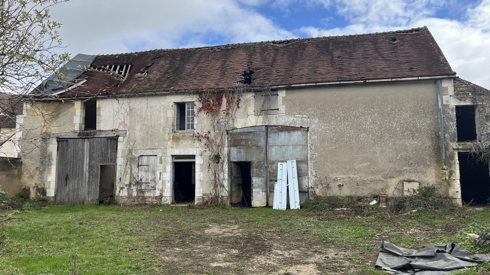
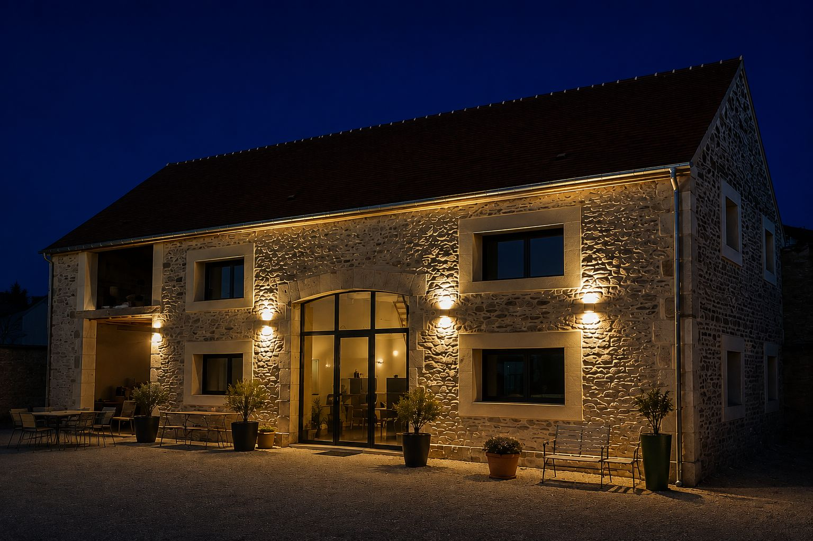

PROJET 01
Venoy — Maison
Ce projet porte sur la réhabilitation d'une grande maison en pierre de 150 m² à Venoy, dans l'Yonne. L'ancienne grange, structurée par une belle hauteur sous toiture, a été transformée en habitation en conservant sa double hauteur d'origine comme geste principal du projet.
La conservation de la pierre a guidé chaque décision : reprise de la maçonnerie existante, dégagement des volumes intérieurs, et insertion mesurée des ouvertures contemporaines pour apporter la lumière sans effacer le caractère du bâti d'origine.
- Lieu
- Venoy, Yonne
- Année
- 2026
- Programme
- Habitat individuel
- Mission
- Maîtrise d'œuvre complète
- Surface
- 150 m²
- Statut
- Travaux achevés

Photographie — double hauteur intérieure
/assets/images/venoy-03.jpgPhotographie — détail de la pierre
/assets/images/venoy-04.jpgPlan de niveau
/assets/images/venoy-plan-rdc.jpgCoupe — double hauteur
/assets/images/venoy-coupe.jpg
Projet suivant
Mandelieu — Maison